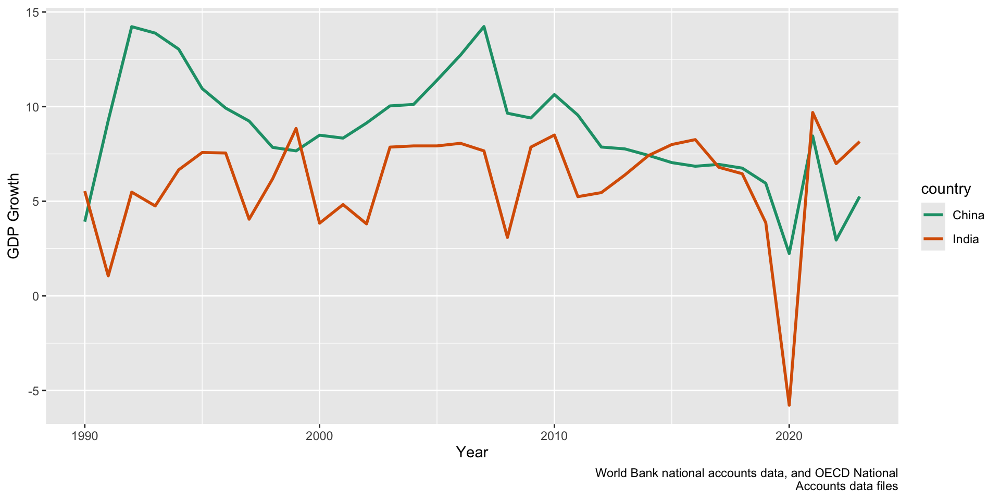

Lecture 7.1
Washington Consensus Reforms
Emmanuel Teitelbaum
The Washington Consensus
What Is It?
- A policy framework associated with market-oriented reform in the 1980s-1990s
- Originally a list of policy prescriptions (often linked to IMF / World Bank reform programs)
- Not the same thing as “all neoliberalism” in every context
- Important in this course because it shaped how crises and reform were understood in many countries
10 Policy Prescriptions
- Fiscal discipline
- Public expenditure priorities (investment vs consumption)
- Tax reform (broader base, lower marginal rates)
- Financial liberalization
- Competitive exchange rates
- Trade liberalization
- Foreign direct investment (remove barriers)
- Privatization of state-owned enterprises
- Deregulation of markets
- Secure property rights
Reform Elements
- Stabilization
- Fiscal discipline, inflation control, exchange rate policy
- Liberalization / opening markets
- Trade, finance, FDI, deregulation
- State restructuring
- Privatization, public spending reprioritization, tax reform
- Longer-run institutional reform
- Property rights, regulatory capacity, state capability
Crisis and Reform
Why Crisis Creates Reform Windows
- Recession, inflation, shortages, and debt make the status quo politically costly
- Balance of payments crises create immediate external financing pressure
- International lenders often condition support on reform packages
- Reformers frame crisis as proof that “the old model” has failed
Elements of an Economic Crisis
- Recession / unemployment
- Inflation (sometimes hyperinflation)
- Balance of payments crisis
- Debt crisis
- Financial crisis / banking instability
Eastern Europe
- Collapse of communist systems
- Price distortions, shortages, inflation
- Push for rapid transition to market economies
- Big external role for international experts / IFIs
India (1991)
- Balance of payments crisis
- Trade shock after Soviet collapse
- Oil shock from Gulf War
- Capital flight and currency pressure
- Reform under crisis, but without full system collapse
Reform Packages
Reform #1: Stabilization
- Goal: stop inflation / currency crisis from spiraling
- Typical tools
- Cut or restrain public spending
- Raise revenue / taxes
- Devalue currency
- Tighten monetary policy
- Political problem: immediate pain, delayed gains
Reform #2: Liberalization
- End controls (prices, licenses, quotas, reservations)
- Reduce tariffs and trade barriers
- Expand FDI access
- Financial sector reforms
- Logic: competition, investment, innovation, and export growth
Reform #3 Privatization
- Transfer state assets to private actors
- Improve incentives and efficiency (in theory)
- Raise state revenue
Reform #4 Structural adjustment
- Longer-term restructuring of how the economy is governed
- Labor, land, capital markets; industrial and investment policy
- Core debate: market reform without state capacity can backfire
Shock Therapy vs. Gradualism
Shock Therapy
- Rapid, broad reforms
- Front-load stabilization and liberalization
- Goal: break old system quickly
- Commonly associated with Eastern Europe
Gradualism
- Sequenced reforms over time
- Build institutions while opening markets
- Slower on politically costly reforms
- India is a key example
India vs. Eastern Europe (Sequencing)
- India moved relatively quickly on trade / investment liberalization
- India moved more slowly on privatization and labor reform
- Eastern Europe often attempted broader reforms much faster
- Key question for us:
- When does speed solve problems?
- When does speed outpace institutions?
Risk: “Partial Reform Equilibrium”
- Early winners from reform may block later reforms
- Privatization without strong institutions can create asset capture
- Result can be a hybrid system:
- Neither effective markets nor accountable states
- This is one reason “reform” outcomes vary so much
Outcomes and Debate
Growth Rates in India and China
What Growth Rates Tell Us
- Shows growth performance over time (and volatility)
- Does not tell us by itself:
- Which reforms caused growth
- Who benefited
- What social costs occurred during transition
- This is why we need comparative and historical analysis
Legacies of Reform
Reading Focus (Archibong et al.)
- Reading for today: Washington Consensus Reforms and Lessons for Economic Performance in sub-Saharan Africa
- Main question:
- What were the long-run effects and limits of Washington Consensus-style reforms in Africa?
- Working distinction:
- Reform adoption is not the same as reform success
Discussion Questions (Small Groups)
- What is the authors’ main argument about the legacy of reforms in Africa?
- Which reforms seem most important in their account, and why?
- What role do state capacity and political institutions play?
- How do the authors treat short-run pain vs. long-run gains?
- What are the limits of the evidence (quantitative and case-based)?
Group Report-Out
- Each group: one claim from the reading the class should take seriously
- Each group: one claim you are skeptical about (and why)
- Connect back to today:
- Does your evidence support shock therapy, gradualism, or “it depends”?
Contemporary Application
Lebanon: Crisis and Reform in Practice
- When robbing a bank seems perfectly justified
- Ongoing recovery / reform context: World Bank on Lebanon
- Use Lebanon as an application exercise:
- Crisis diagnosis
- Reform package design
- Political feasibility
Lebanon Discussion
- Is Lebanon’s crisis mainly a macroeconomic crisis, a banking / financial crisis, a governance crisis, or all three?
- Which Washington Consensus-style reforms might help in Lebanon?
- Which reforms could deepen social pain without protections?
- What sequencing would you propose:
- Stabilization first?
- Institutional repair first?
- Both in parallel?